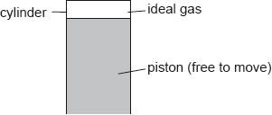
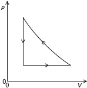

| Date | May 2018 | Marks available | 2 | Reference code | 18M.3.SL.TZ2.7 |
| Level | Standard level | Paper | Paper 3 | Time zone | 2 |
| Command term | Sketch | Question number | 7 | Adapted from | N/A |
Question
A cylinder is fitted with a piston. A fixed mass of an ideal gas fills the space above the piston.

The gas expands isobarically. The following data are available.
The gas returns to its original state by an adiabatic compression followed by cooling at constant volume.
Show that the final volume of the gas is about 53 m3.
Calculate, in J, the work done by the gas during this expansion.
Determine the thermal energy which enters the gas during this expansion.
Sketch, on the pV diagram, the complete cycle of changes for the gas, labelling the changes clearly. The expansion shown in (a) and (b) is drawn for you.
![]()
Outline the change in entropy of the gas during the cooling at constant volume.
There are various equivalent versions of the second law of thermodynamics. Outline the benefit gained by having alternative forms of a law.
Markscheme
ALTERNATIVE 1
«Using »
V2 =
V2 = 52.7 «m3»
ALTERNATIVE 2
«Using PV = nRT»
V =
V = 52.6 «m3»
[2 marks]
W «= PΔV» = 11.2 × 103 × (52.7 – 47.1)
W = 62.7 × 103 «J»
Accept 66.1 × 103 J if 53 used
Accept 61.6 × 103 J if 52.6 used
[2 marks]
ΔU «= nRΔT» = 1.5 × 243 × 8.31 × (19 – (–12)) = 9.39 × 104
Q «= ΔU + W» = 9.39 × 104 + 6.27 × 104
Q = 1.57 × 105 «J»
Accept 1.60 × 105 if 66.1 × 103 J used
Accept 1.55 × 105 if 61.6 × 103 J used
[3 marks]
concave curve from RHS of present line to point above LHS of present line
vertical line from previous curve to the beginning

[2 marks]
energy is removed from the gas and so entropy decreases
OR
temperature decreases «at constant volume (less disorder)» so entropy decreases
OWTTE
[1 mark]
different paradigms/ways of thinking/modelling/views
allows testing in different ways
laws can be applied different situations
OWTTE
[1 mark]